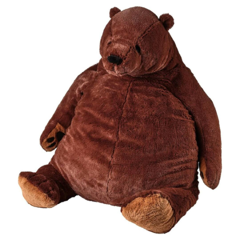

Making Your Webpages Responsive
Annabelle Germond -- 02/23/2026
Home
About
Contact
Responsive Web Design
I will demonstrate how image-flex works with the images below.
Image Flex Gallery

Djungelskog Bear Plush Toy Facing Left
Djungelskog Bear Plush Toy Facing Right
Kodiak Bear Plush Toy Facing Forward
Kodiak Bear Plush Toy Facing Left